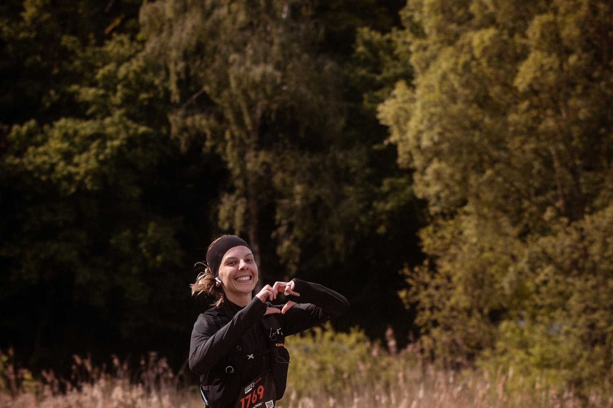
Photos & film L'événement en images.
Le film et les photos de l'édition 2026, entre le lac, la forêt et le Village LIGHT ON. Les classements sont sur la page Résultats.
Le film
L'aftermovie 2026.
2 minutes de départs, de lac et d'arrivées. Avec le son, c'est mieux.
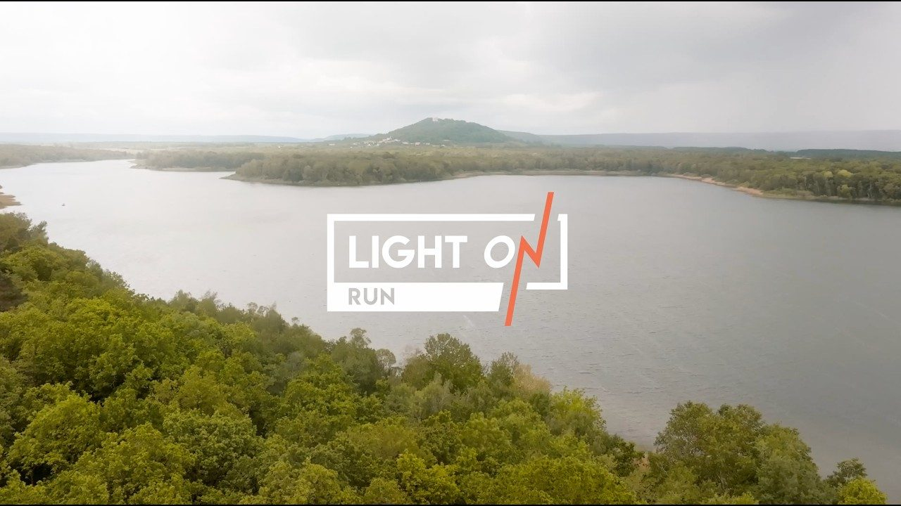
Photos
Les visages de la course.
Une sélection d'instants saisis sur les parcours et au Village LIGHT ON. La galerie complète de l'édition 2027 sera partagée après la course. Les albums complets des éditions précédentes sont juste en dessous.
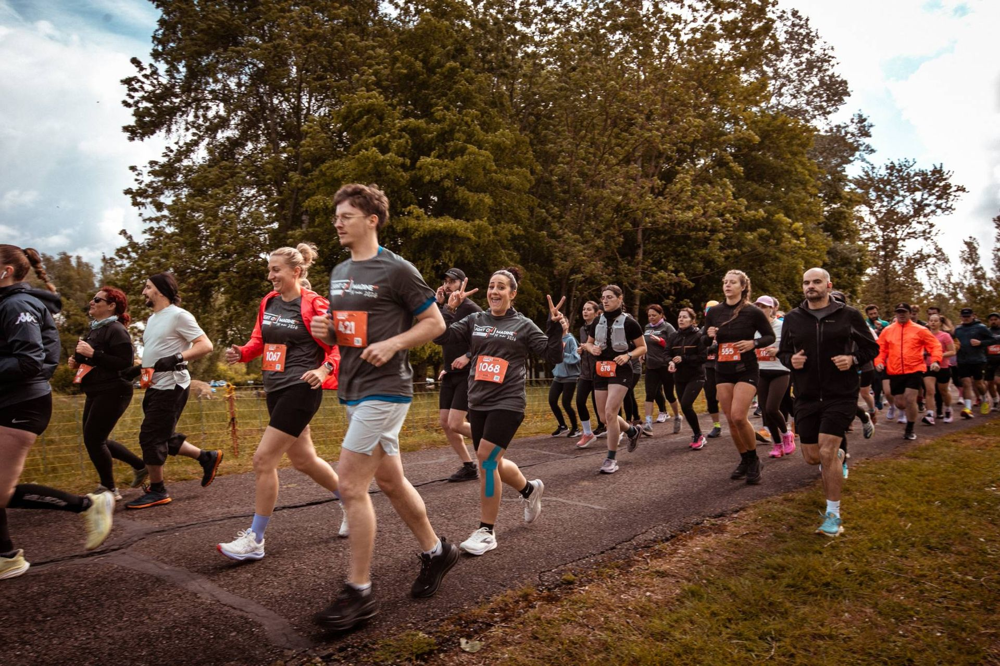
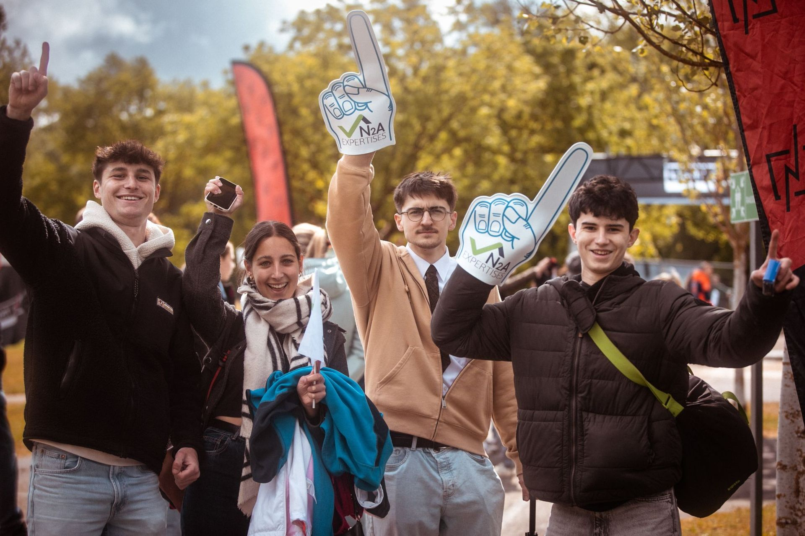
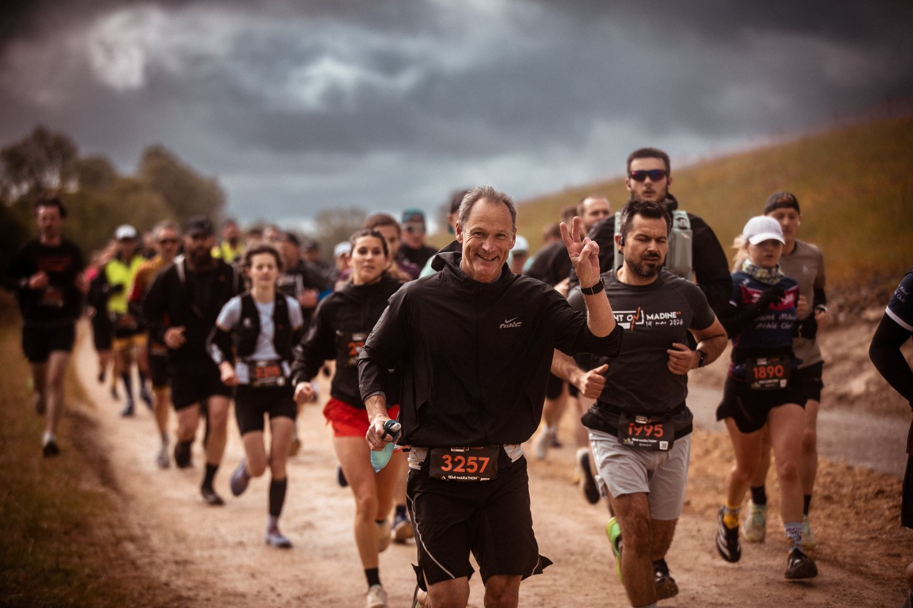
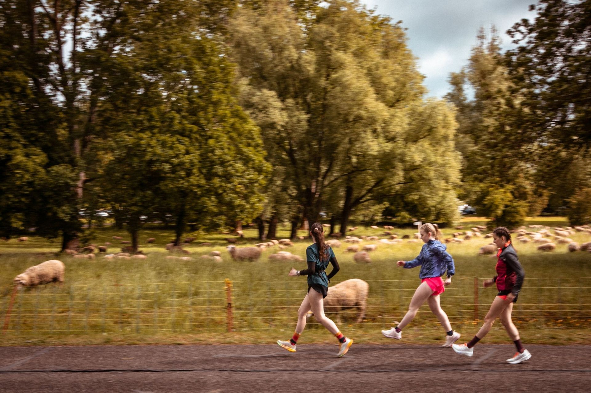
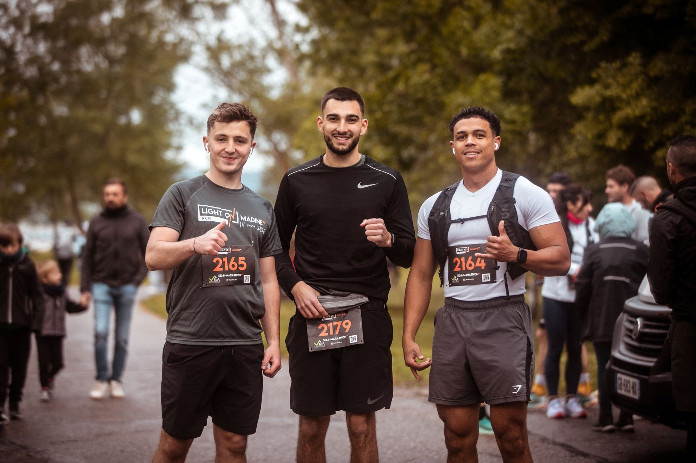
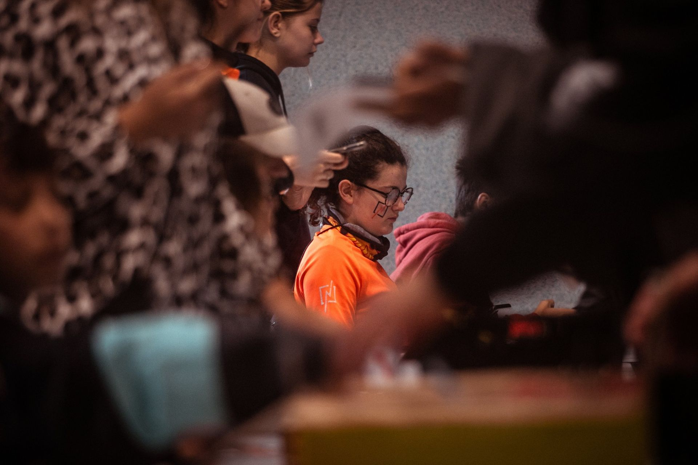
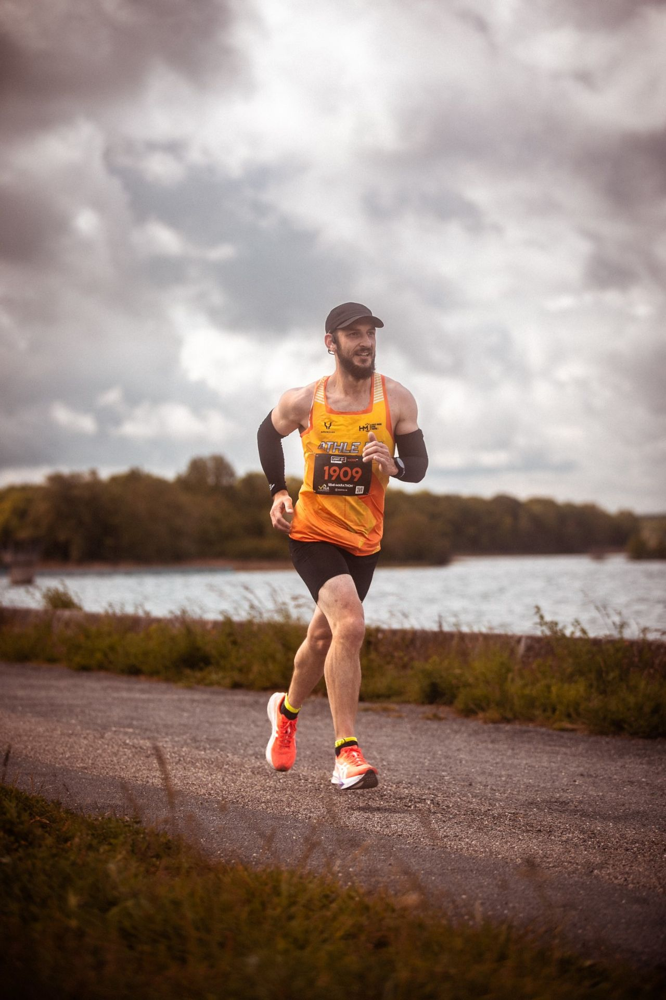
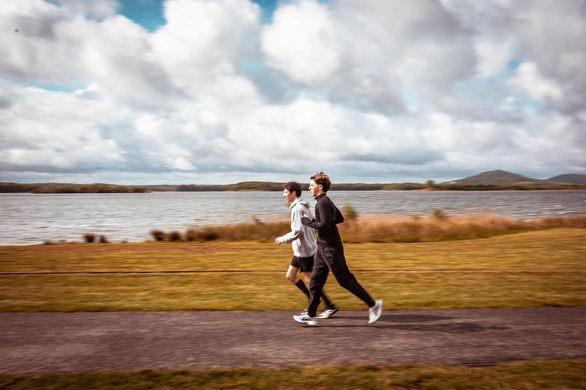
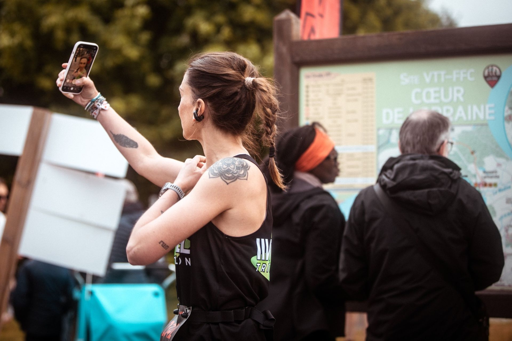
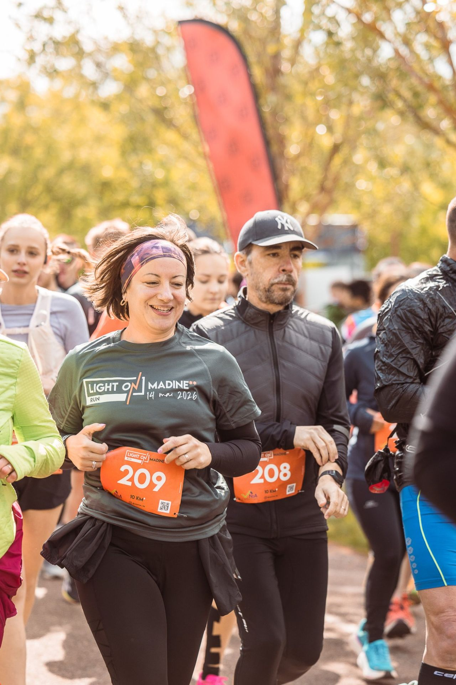
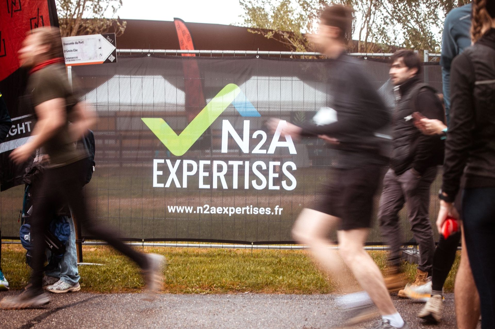
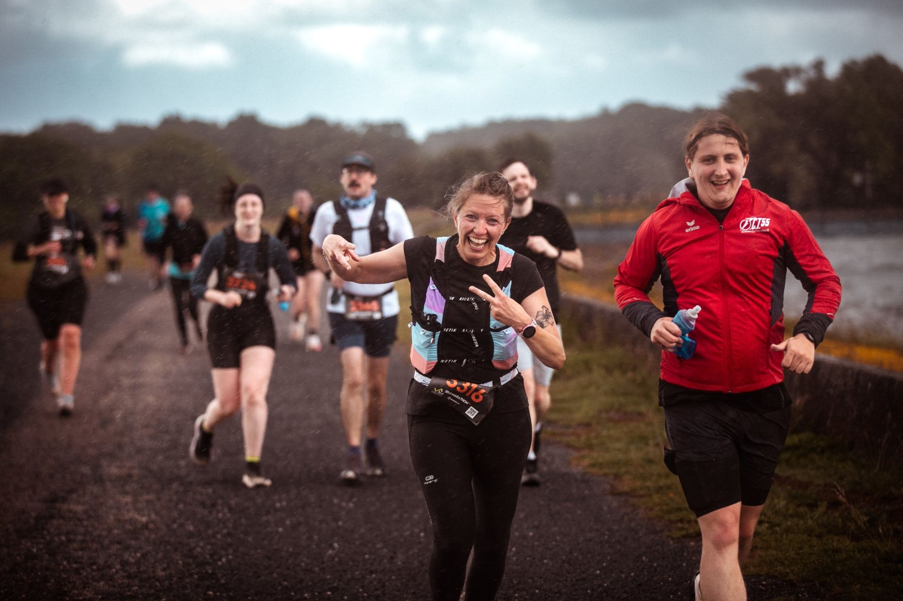
Envie d'y figurer en 2027 ?
Inscriptions ouvertes. Rendez-vous le 6 mai 2027.